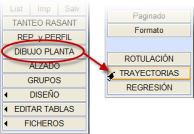YATAY GÜZERGAH dikey menüsünden → [PLAN ÇİZİMİ] → [DÖNÜŞ GÜZERGAHLARI]'ndan erişilebilen bu menü, düşük hızlı araçların dönüş güzergahlarının hesaplanmasını sağlar (ön ve arka tekerleklerin yanı sıra aracın köşelerinin yörüngelerinin hesaplanması).
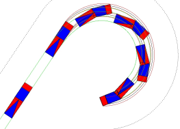On ikiye kadar mafsallı birime sahip bir araç tanımlanabilir (örneğin, havaalanlarındaki bagaj arabası trenlerinin yörüngelerinin incelenmesi için kullanışlıdır).
Uygulama tarafından oluşturulan çizim, iletişim kutusunda görülebileceği gibi, her bir elemanla ilişkili çizgi tipleri değiştirilirse değiştirilebilir.
Otomatik kutucuğu işaretlenirse, yatay güzergahta sıcak noktalarından birini sürükleyerek veya bir parametreyi değiştirerek ekseni değiştirirsek, Oluştur (dönüş güzergahı) simgesine basmaya gerek kalmaz ve eksen yeniden hesaplandığında bu otomatik olarak yeniden hesaplanır.
Çeşitli araç türleri (karayolları, demiryolları) kullanılabilir ve bu nedenle hesaplama için birkaç mod olabilir:
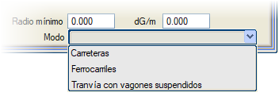
1) Karayolları.
2) Demiryolları.
3) Asılı vagonlu tramvaylar: Tek sayıda birimden oluşurlar (örn: 5)
- Tek sayılılar (1,3 ve 5) vagonla birlikte tek bir rijit boji üzerinde hareket eder.
- Çift sayılılar (2 ve 4) önceki ve sonraki vagon arasına asılıdır.
- Bu mod seçildiğinde, gerekli parametrelerle yeni bir model gösterilir. İletişim kutusunda, sadece her birimin konumuna göre tanımını yapan veriler düzenlenebilir olarak görünür.
Birinci birimin ön aksının orta noktasının (varsayılan yapılandırma) izleyeceği yörüngeyi tanımlamak için aşağıdaki veriler sağlanır:
- Her bir entegrasyon adımı için bir eşit aralık, yani her bir hesaplamanın ne sıklıkla yapıldığı (Eşit Aralık).
- Aracın kaç entegrasyon adımında bir çizileceği. Örneğin, Eşit Aralık değerinde 0.1 metre ve Her ..'de Çiz'de 100 tanımlanmışsa, araç her 10 metrede bir çizilecektir.
- Eksen numarası (EKSEN), eksene mesafe (Mes), Başlangıç KM ve Bitiş KM. Eğer başlangıç KM'si bitiş KM'sinden büyük belirtilirse, analiz ekseni ters yönde giderek gerçekleştirilir.
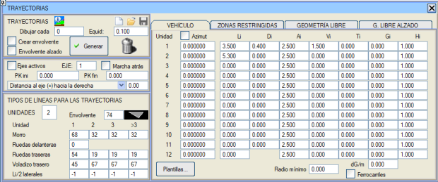
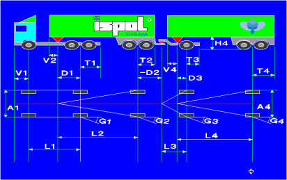İlk birim şunlarla tanımlanır:
- Ön aks ile arka aks arasındaki mesafe.
- Ön aks ile tampon arasındaki konsol mesafesi.
- Arka akstan bir sonraki birim için bağlayıcının konumu.
- Arka tekerleklerin arkasında bir konsol mesafesi.
Sonraki birimler şunlarla tanımlanır:
- Önceki birimle bağlantı noktası ile arka aksı arasındaki eşdeğer uzunluk.
- Arka akstan bir sonraki birim için bağlayıcının konumu.
- Bağlantı noktasının önünde bir konsol mesafesi.
- Arka tekerleklerin arkasında bir konsol mesafesi.
- Bağımsız bir genişlik.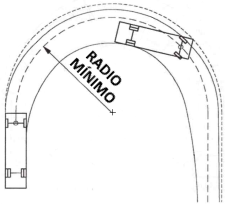
-
Azimut seçeneği, her birim için kullanıcı tarafından tanımlanan sabit bir azimutla hesaplamayı başlatmayı sağlar. Devre dışı bırakılırsa, tüm birimler başlangıç azimutuyla hizalanmış olarak başlar. Azimut değerleri, her birimin son hesaplanan konumuyla otomatik olarak doldurulur, bu da ardışık yörünge hesaplamalarını zincirlemeyi kolaylaştırır.
- Her birimin arka tekerlekleri için maksimum dönüş açısı ve bu tekerleklerin metre başına derece cinsinden maksimum dönüş hızı (dD/m).
- Minimum yarıçap:
aracın minimum dönüş yarıçapını tanımlama imkanı. Minimum dönüş yarıçapı, yörünge merkezinden yönlendirici aksının merkezine (genellikle ön aks) kadar tanımlanır.
Aracın yörüngesini aşağıdaki resimde gösterilen çeşitli modlarda tanımlamak mümkündür:
Aracın İnteraktif Sürüş modu vardır. Eksen ve KM aralığı, boyutlarına göre veya şablondan araç ve süpürme alanının oluşturulup oluşturulmayacağı seçildikten sonra; interaktif sürüş modunu seçip Oluştur'a basıyoruz. Klavyeyle ilişkili işlevleri içeren bir yardım iletişim kutusu açılır:
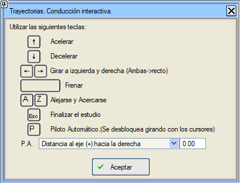
Otomatik pilot sürüş modu seçilebilir:
- Eksene mesafe.
- Platform kenarına mesafe.
- Burunun platform kenarına mesafesi.
- Burunun eksene mesafesi.
- Sağ kenara mesafe.
- Sol kenara mesafe.
Eğer aracın yönlendirilebilir arka tekerlekli bir birimi varsa, bunlar Otomatik Pilot tarafından yönlendirilecektir. Tamam'a basıldığında simülasyon başlar. Hareketi başlatmak için gaza basın. Eğer Süpürme Alanı Oluştur'u etkinleştirdiyseniz, bu, çalışma bittiğinde oluşturulacaktır.
Aktif eksenler:
tüm aktif eksenler için aynı anda dönüş güzergahı çalışmasını oluşturur. Ayrıca, bir eksen veya tüm aktif eksenler için yörünge hesaplamasında oluşturulan çizgiler kendi eksen modelinde oluşturulur.
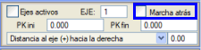Geri geri gitme imkanı sunulmuştur. Bu durumda, son birimin arka aksının orta noktası ekseni (veya paraleli) takip etmeye çalışır ve bu son birim o noktada yörüngeye teğet kalır. Birinci birimin ön tekerlekleri hariç, tekerleklerin dönüşleri dikkate alınmaz.
Her birim için, kullanıcı tarafından belirtilen çizgi tipleriyle aşağıdaki çizgiler çizilir:
- Dört köşenin ve birimlerin ilgi noktalarının yörüngeleri.
- Birinci birimin ön tekerlekleri.
- Tüm birimlerin arka tekerlekleri.
- Dört tekerleğin (birinci birim) veya arka tekerlekler ile bağlantının (birimler 2, 3, 4,..., 12) konumunu kapsayan bir alan.
- Arka ve ön konsolları dikkate alarak her birimin dört köşesini kapsayan başka bir alan.
- Li uzunluğunun yarısında her iki tarafta bir nokta yörüngesiyle bir çizgi (varsayılan olarak -1 çizgi tipi kullanılır, bu da çizilmeyecekleri anlamına gelir).
- Eğer Süpürme Alanı Oluştur seçeneği etkinleştirilirse, çizilen tüm çizgilerin bir zarf eğrisi de oluşturulur. Zarf, sadece çizilen çizgileri değil, aynı zamanda aracın tüm birimlerini tüm uzantısıyla kapsar.
Yörünge zarfı için çizgi tipini değiştirme ve kaydetme imkanı. Varsayılan olarak zarfı kapsayan çizgi L74'tür.
- Eğer Boykesit Süpürme Alanı seçeneği etkinleştirilirse, her birim için yerden aracın karın boşluğuna kadar bir yükseklik (Hi) tanımlama imkanı vardır. Bu durumda boykesit süpürme alanı, KIRMIZI KOTLAR'a yüklenebilen bir boykesit (tray#.lon, # numara olmak üzere) olarak hesaplanır ve her KM'de herhangi bir birimin karın boşluğunun herhangi bir yerinde ulaşılan yere en yakın noktayı içerir.
Demiryolları kutucuğu etkinleştirildiğinde, program şu şekilde davranır:
- Arka tekerlekler, hat üzerindeki ön tekerleklerin yörüngesini takip ederek serbestçe dönebilir, bunun için aşağıdaki parametreler sabitlenir:
-
Arka tekerleklerin maksimum dönüş değerleri Gi=90 olarak ayarlanır.
-
Bu tekerleklerin maksimum dönüş hızı dD/m=90 olarak sabitlenir.
-
Minimum dönüş yarıçapı = 0.;
-
Gidiş modu sadece eksen üzerinden veya eksene bir mesafede olabilir.
-
Geri geri gitme algoritması uygulanamaz. (Rijit arka tekerlekler anlamına gelir).
Şablonlar komutuyla, ilgili parametreleriyle yedi tür araca sahip bir iletişim kutusuna erişebiliriz:
- Otomobil
- Kamyonet
- Tek Parça Otobüs
- Körüklü Otobüs
- Hafif Kamyon
- Mafsallı Araç
- Yol Treni (TIR)
- Tren
- Kanat Taşıyıcı
- Maden Kamyonu
Kabul Et kutucuğuna basarak araç verilerini DÖNÜŞ GÜZERGAHLARI iletişim kutusuna yükleriz.
Bir şablon yüklendiğinde, seçilen aracın türü ana iletişim kutusunda yansıtılır.
|
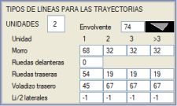
|
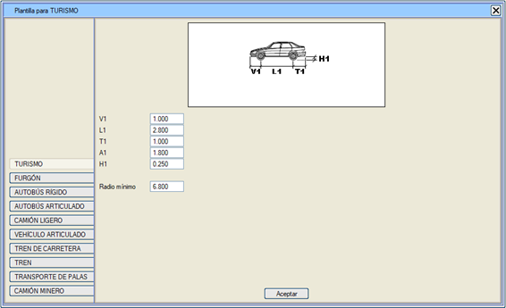
Kısıtlı bölgeler
[KISITLI BÖLGELER] sekmesi, aracın çekici ünitesinin dolaşımı için zorunlu kesimler tanımlamayı sağlar, bu da örneğin aracın bir köprü gibi mevcut bir yapıdan geçmesi gerektiğinde çok kullanışlıdır. Zorunlu kesimler, başlangıç ve bitiş KM'leri ile bu KM'lerdeki eksene olan mesafe ile verilir.
Arka tekerleklerin maksimum dönüş açısı Gi, bölgelere göre maksimum bir değer verilerek sınırlandırılabilir.
Serbest geometri
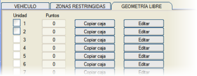Program, her birim için varsayılan olarak kullanılan dikdörtgenler yerine, kapalı bir alanla tanımlanan bir serbest geometri kullanmaya izin verir.
[Kutuyu Kopyala] seçeneği, A genişliğinde ve ön konsol (V), akslar arası uzunluk (L) ve arka konsol (T) toplamı uzunluğunda bu dikdörtgen alanı döker.
Bu poligon, X ekseni olarak aracın simetri eksenini (başlangıç ön aksta) ve Y ekseni olarak ön aksı kullanarak sayısal veya grafiksel olarak düzenlenebilir. Bu poligon şunlar için kullanılır:
- Aracı farklı konumlarda çizmek için.
- Yörüngenin yataydaki süpürme alanını hesaplamak için.
Serbest Geometri Boykesit
Boykesit süpürme alanını daha hassas bir şekilde oluşturmak için, her birimin alt kısmının (tekerlekler hariç) boykesitte serbest bir geometrisini tanımlama imkanı.
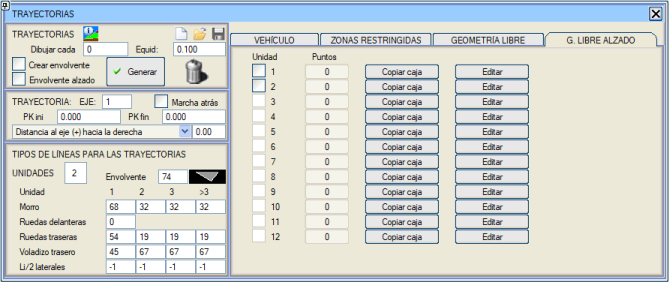
Notlar
Eğer bu iletişim kutusuna bir yörünge hesaplaması için veri girilmişse:
- Başlangıç KM'si Bitiş KM'sinden farklı
- Sıfırdan büyük eşit aralık.
O zaman yatay güzergah eksen hesaplama tuşlarının yanında, eksenlerde herhangi bir değişiklik yapıldıktan sonra yörüngeyi anında oluşturmayı sağlayan bir simge ve bunun yanında yörünge çizimlerini silebilmek için başka bir simge belirir.
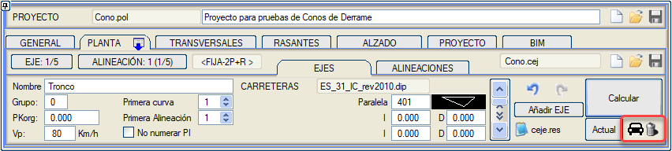
|